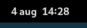
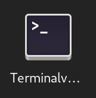
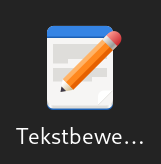
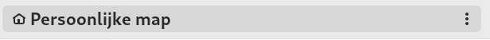

Aanmelden en afmelden
Meld u aan met het account (gebruikersnaam=tux, wachtwoord=tux)
Afmelden
Klik op 
Klik op 
Klik op “Afmelden …”
Bevestig in de popup
Log opnieuw aan
Schermbeveiliging activeren
Activeer de schermbeveiliging met SUPER+L
Maak de computer weer los door het wachtwoord van gebruiker Tux in te voeren: tux
Hulp openen en sluiten 1
Open hulp met SUPER+F1
Sluit Hulp met ALT+F4
Hulp openen en sluiten 2
Open hulp met SUPER+6
Sluit Hulp met kruisje rechtsboven
Hulp openen en sluiten 3
Open Hulp met SUPER, type hulp en druk ENTER
Sluit de hulp met CTRL+W
Hulp openen en sluiten 4 (moeilijk)
Open de hulp door op SUPER te drukken, en dan op het reddingsboei symbool op de dash te klikken
Gebruik CTRL+S en zoek op ‘sneltoetsen’, ga naar ‘Sneltoetsen > instellen’
Ga naar beneden naar ‘Vooraf gedefinieerde sneltoetsen’
Klap ‘Systeem’ open en zoek de sneltoets voor ‘Toepassingenmenu openen’.
Gebruik deze toets. Sluit de hulp dan met ENTER of SPATIEBALK.
Ga activiteiten modus in en verlaat haar onverrichter zake weer (zes keer)
Ga activiteiten modus in met het toetsenbord SUPER (driemaal)
Verlaat activiteiten modus met ESC
Verlaat activiteiten modus met SUPER
Verlaat activiteiten modus via de knop 
Ga activiteiten modus in met de muis (driemaal)
Verlaat activiteiten modus met ESC
Verlaat activiteiten modus met SUPER
Verlaat activiteiten modus met de knop
Open de samenvatting van deze cursus:
Druk SUPER in (en laat hem weer los)
Type samenv gevolgd door ENTER
Druk CTRL+W om haar weer te sluiten
Ga applicatie modus in en verlaat haar onverrichter zake weer (zes keer)
Ga applicatie modus binnen via SUPER+A
Ga terug naar normale modus met SUPER
Ga terug naar normale modus met ESC ESC
Ga terug naar normale modus met
Ga met behulp de muis applicatie modus binnen door te klikken op en daarna op 
Ga terug naar normale modus met SUPER
Ga terug naar normale modus met ESC ESC
Ga terug naar normale modus met
Ga applicatie modus binnen op een wijze naar keuze en
Sleep firefox  naar het eerste (linker) werkblad
naar het eerste (linker) werkblad
Sleep kaarten  naar het tweede (rechter) werkblad
naar het tweede (rechter) werkblad
Ga naar gewone modus op een wijze naar keuze
Sluit beide toepassingen
Ga naar het eerste (linker) werkblad met SUPER+PageUp
ALT+F4 om firefox te sluiten
SUPER+PageDown om naar tweede werkblad te gaan
ALT+F4 om kaarten te sluiten
Open en sluit het notificatie venster
Open met een klik op 
- Sluit met een klik op
Open met SUPER+V
Sluit met ESC
Sluit met SUPER+V
Open het systeemmenu en sluit haar onverrichter zake weer
Open met klik op
- Sluit met klik op
Open met klik op
- Sluit met klik ergens buiten het menu
Open met klik op
- Sluit met
ESC
Netwerk uitschakelen en opnieuw inschakelen
Start en ga naar tldp.org.
Open het systeemmenu
Klik  , knop wordt grijs
, knop wordt grijs
Sluit het systeemmenu
Start en ga naar debian.org, dit zal niet gaan
Open het systeemmenu
Klik  , knop krijgt weer kleur
, knop krijgt weer kleur
Sluit systeemmenu
Ga naar en herlaad de pagina met F5
Sluit Firefox met ALT+F4
Afmelden op twee manieren
Met muis
Klik op
Klik op
Klik op “Afmelden …”
Annuleer in de popup
Met toetsenbord
SUPER afme ENTER
Annuleer in de popup door SPATIEBALK of ESC
Uitschakelen op drie manieren
Met ALT+CTRL+DELETE
- Annuleer in de popup met
ESC
Met muis
Klik op
Klik op
Klik op “Uitschakelen …”
Annuleer in de popup met ESC
Met toetsenbord
SUPER uits ENTER
Annuleer in de popup door SPATIEBALK of ESC
Herstarten op twee manieren
Met muis
Klik op
Klik op
Klik op “Herstarten …”
Annuleer in de popup met ESC
Met toetsenbord
SUPER hersta ENTER
Annuleer in de popup door SPATIEBALK of ESC
Sneltoetsen toevoegen. Open sneltoetsen in de Instellingen door:
SUPER snelt ENTER
Klik op “Sneltoetsen bekijken en aanpassen”
Ken onder de afdeling “Starters” SUPER+E aan “Persoonlijke map”
Ken onder de afdeling “Starters” SUPER+C aan “Rekenmachine starten”
Ken onder de afdeling “Starters” SUPER+I aan Instellingen
Aangepaste sneltoetsen toevoegen. Open sneltoetsen in de Instellingen.
Open de afdeling “Aangepaste sneltoets” (onderaan).
SUPER+SHIFT+I toekennen aan “Afstellingen”
Klik op de + onderaan
Vul onder “Naam” Afstellingen in
Vul onder “Opdracht” gnome-tweaks in
Klik op “Sneltoets instellen” en druk SUPER+SHIFT+I
Ken ALT+CTRL+T toe aan de opdracht gnome-terminal onder de naam Terminal.
Sneltoetsen opzoeken. Open de sneltoetsen instellingen zoals in beschreven in de eerste oefening (Hint: Afdeling “Vensters”).
Wat is de toets voor “Venster maximaliseren”?
Wat is de toets voor “Venster herstellen”?
Sneltoetsen opzoeken. Open de sneltoetsen instellingen zoals in beschreven in de eerste oefening. Gebruik nu het vergrootglas bovenaan het venster om te zoeken.
Wat is de toets voor “Toepassingenmenu openen”? Type toepassingenmenu in het tekstvak naast het vergrootglas en kijk in de zoekresultaten voor het antwoord
Wat is de toets voor “Afmelden”? Type afmelden in het tekstvak naast het vergrootglas en kijk in de zoekresultaten voor het antwoord
Open en sluit terminal 1
Open met ALT+CTRL+T
Sluit met CTRL+D (betekent end of file in UNIX)
Open en sluit terminal 2
Open SUPER, ter, ENTER
Sluit met CTRL+D
Open en sluit terminal 3
Ga in applicatie modus met SUPER+A
Klik op het terminal venster icon 
Sluit het venster met de muis door op het kruisje rechtsboven te klikken
Open en sluit terminal 4
Ga in applicatie modus met de muis:
Klik op
Klik op de 3x3 puntjes op de dash
Sleep het naar het eerste werkblad
Klik op om applicatie modus te verlaten
Klik op een willekeurige plek van het terminalvenster
Sluit het terminalvenster door ALT+F4 in te drukken
Open met ALT+CTRL+T een terminalvenster
Gebruik het toepassingmenu om een extra terminalvenster te openen
SUPER+F10
ENTER op “Nieuw venster”
Sluit het tweede terminalvenster af via het toepassingsmenu
SUPER+F10
Gebruik de pijltjes toetsen om naar “Afsluiten” te komen
Druk SPATIEBALK
Herhaal dit voor het eerste terminalvenster
Open en sluit twee Firefox vensters
Druk SUPER+1 om Firefox te openen
Maak een nieuw venster aan via het toepassingsmenu
SUPER+F10
ENTER op “Nieuw venster”
Sluit beide vensters met het toepassingsmenu
SUPER+F10
Gebruik de pijltjes toetsen om naar “Afsluiten” te komen
Druk SPATIEBALK
Open en sluit twee LibreOffice writer vensters met het bestandsmenu
Druk SUPER+3
Druk F10 om de menubalk voor Writer te activeren
Druk ↓
Druk →
Druk SPATIEBALK
Druk F10 om de menubalk voor Writer te activeren
Druk ↑ om snel bij “Afsluiten” te komen
Druk SPATIEBALK
Open twee LibreOffice writer vensters en sluit ze één voor één
Druk SUPER+3
Druk CTRL+N om via de sneltoets voor een nieuw venster van LibreOffice een tweede venster te openen
Druk CTRL+W om het tweede venster te sluiten
Druk CTRL+W om het eerste venster te sluiten
Druk CTRL+Q om LibreOffice af te sluiten
Open twee LibreOffice writer vensters en sluit ze één voor één
Druk SUPER+3
Druk CTRL+N om via de sneltoets voor een nieuw venster van LibreOffice een tweede venster te openen
Klik op het kruisje rechtsboven van het tweede venster
Klik op het kruisje rechtsboven van het eerste venster
Open en sluit een LibreOffice calc venster
Druk SUPER spread ENTER
Sluit met ALT+F4
Open en sluit een eenvoudige (platte) tekst editor
Druk SUPER tekst ENTER
Sluit met ALT+F4
Open een rekenmachine en reken 6 keer 7 uit
Druk SUPER+C
Druk 6*7 ENTER
Sluit met ALT+F4
Reken 2 + 4 x 10 uit via het zoekvak
Druk SUPER 2+4*10
Druk SUPER om in normale modus terug te keren
Open een tekst editor via applicatie modus
Ga met de muis naar applicatie modus (twee stappen)
Klik rechts op > om naar de tweede pagina te komen
Klik op 
Open een tweede venster met CTRL+N
Sluit tweede venster met ALT+F4
Sluit eerste venster met ALT+F4
Open een tekst editor via applicatie modus
Druk SUPER+A
Druk PageDown om op de tweede pagina te komen
Sleep naar het eerste werkblad
Druk tweemaal ESC om in normale modus te komen
Sluit het venster met ALT+F4
Open en sluit twee Firefox vensters met de muis
Ga activiteiten modus in door op te klikken
Klik op op de dash
Ga opnieuw activiteiten modus in door op te klikken
Klik met CTRL ingedrukt op op de dash
Verlaat activiteiten modus door op te klikken
Klik de beide vensters dicht door op het kruisje rechtsboven te klikken
- Noem twee manieren waarop dit sluiten van beide vensters in één keer had gekunt (er zijn drie manieren)
Som manieren op waarop een toepassing, waaraan een sneltoets is toegekend, maar niet op de dash staat, kan worden gestart (vier manieren)
Som manieren op waarop een toepassing, waaraan een sneltoets is toegekend en op de dash staat, kan worden gestart (vijf manieren)
Op welke wijzen kan een extra venster worden geopend van toepassingen (die extra vensters toestaan)? (vier manieren)
Wat is de toetscombinatie waarmee een venster wordt gesloten?
Wat is een gangbare toetscombinatie waarmee een toepassing wordt afgesloten?
Waarom is een goed idee om toepassingen die u veel gebruikt aan de dash toe te voegen? (twee redenen)
Start Firefox met SUPER+1.
Ga naar de URL: slspeek.github.io/linux-beginners-cursus.
Scroll naar het kopje “Lesmateriaal”
Klik op de koppeling van de HTML versie (tweede kolom) van “Presentaties”
Blader door enkele presentaties heen, nu weet u waar u het lesmateriaal online kunt vinden
Sluit de browser af met CTRL+Q
Start Firefox met SUPER+1.
Ga naar debian.org.
Open een extra tabblad met CTRL+T, merk op dat u gelijk het webadres kunt intypen. Ga naar tldp.org.
Ga terug naar het eerste tabblad door CTRL+TAB in te drukken.
Sluit debian.org, met CTRL+W.
Sluit de browser af door het laatste tabblad te sluiten (CTRL+W)
Start Firefox met SUPER+1.
Ga naar de URL: slspeek.github.io/linux-beginners-cursus
Scroll naar het kopje “Lesmateriaal”
Open de HTML versie (tweede kolom) van Samenvatting en Oefeningen op een apart tabblad (en blijf op de eerste pagina)
Gebruik CTRL+TAB om de twee nieuwe pagina’s te bekijken
Sluit de browser af met CTRL+Q
Start Firefox met SUPER+1.
Start Firefox met SUPER+1.
Start Firefox met SUPER+1.
Ga met behulp van de bladwijzer naar de URL: slspeek.github.io/linux-beginners-cursus (“Linux beginners cursus”)
Scroll naar het kopje “Lesmateriaal”
Klik op de koppeling van de HTML versie van “Verder leren” (tweede kolom)
Maak een bladwijzer door op  aan de rechterzijde te klikken
aan de rechterzijde te klikken
Sluit de browser af met CTRL+Q
Start Firefox met SUPER+1.
Ga met behulp van de bladwijzer naar de URL slspeek.github.io/linux-beginners-cursus (“Linux beginners cursus”)
Klik op de HTML versie van “Samenvatting” onder het kopje “Lesmateriaal”
Maak bladwijzerbalk zichtbaar met CTRL+SHIFT+B als deze verborgen is
Maak een bladwijzer door  naar de bladwijzerbalk te slepen
naar de bladwijzerbalk te slepen
Sluit de browser af met CTRL+Q
Start Firefox met SUPER+1.
Als de bladwijzerbalk niet zichtbaar is maakt u hem zichtbaar met SHIFT+CTRL+B
Open het context menu (rechtsklikken) van de bladwijzerbalk en kies “Map toevoegen …” en maak een map “cursus” aan
Sleep de drie bladwijzers over de cursus naar deze map (“Linux beginners cursus”, “Verder leren” en “Samenvatting voor de Linux beginners cursus”)
En orden ze zodanig dat het resultaat er zo uitziet: 
Sluit de browser af met CTRL+Q
Start Firefox met SUPER+1.
Ga met behulp van de bladwijzer naar de URL slspeek.github.io/linux-beginners-cursus (“Linux beginners cursus”)
Ga naar het kopje “Lesmateriaal”
Klik met CTRL ingedrukt op de HTML versies van “Oefeningen” en “Begrippenlijst”
Als de bladwijzerbalk niet zichtbaar is maakt u hem zichtbaar met SHIFT+CTRL+B
Breng met behulp van CTRL+TAB de tabbladen 1 voor 1 naar voren en sleep naar de map “cursus” op de bladwijzerbalk
Sluit de browser af met CTRL+Q
Start Firefox met SUPER+1
Ga naar kernel.org
Maak een bladwijzer met CTRL+D
Ga naar “Bladwijzers beheren” met CTRL+SHIFT+O. Er opent een popup venster met de titel “Bibliotheek”.
Selecteer in het linkerpaneel “Bladwijzerbalk”
Verwijder de bladwijzer naar kernel.org, door rechts te klikken op de kernel.org bladwijzer en “Bladwijzer verwijderen” te kiezen
Sluit het “Bibliotheek” venster met CTRL+W
Sluit de browser af met CTRL+Q
Noem drie manieren waarop je een bladwijzer in Firefox kunt maken (er zijn er vier).
Noem drie manieren waarop je een bladwijzer in Firefox kunt verwijderen.
Start Firefox met SUPER+1
Ga naar ‘Add-ons en thema’s’ met CTRL+SHIFT+A of via het hamburger menu  rechtbovenin.
rechtbovenin.
Selecteer aan de linkerzijde van de pagina ‘Extensies’
Type in het zoekvak met label “Meer add-ons zoeken” Adblocker Ultimate en installeer deze extensie:
Kies het bovenste zoekresultaat
Klik op de blauwe knop met opschrift “Toevoegen aan Firefox”
Klik in popup die rechtbovenin verschijnt op “Toevoegen”
Klik in de volgende popup die rechtbovenin verschijnt op “Oké”
Sluit de browser af met CTRL+Q
Start Firefox met SUPER+1.
Start Firefox met SUPER+1
Ga via het hamburgermenu rechtsboven naar ‘Hulp’ en dan naar ‘Hulp verkrijgen’
Type navigatiegeschiedenis in het zoekvak midden op de pagina
Wat betekent geschiedenis in Firefox?
Sluit de browser af met CTRL+Q
Wat is het pad van de thuismap van gebruiker tux?
Wat is het map scheidingsteken op Linux?
Onder welke map is een aangekoppelde USB-stick terug te vinden?
Waarvoor hebt u een bestandsbeheerder nodig (noem vier redenen)?
Noem drie manieren waarop u de bestandsbeheerder kunt openen.
Wisselen tussen raster- en lijstweergave.
Open bestandsbeheerder met SUPER+E
Wissel naar lijstweergave met CTRL+1
Wissel naar rasterweergave met CTRL+2
Welke weergave geeft meer informatie?
Sluit de bestandsbeheerder met CTRL+W
Wisselen tussen raster- en lijstweergave.
Open bestandsbeheerder met SUPER+E
Wissel naar de andere weergave met één van de knoppen rechtsbovenin:  of
of 
Keer terug naar eerste weergave
Sluit de bestandsbeheerder met CTRL+W
Verborgen bestanden tonen
Open bestandsbeheerder met SUPER+E
Toon de verborgen bestanden met behulp van het hamburgermenu , het menuitem heet “Verborgen bestanden tonen”
Wat voor soort namen hebben de verborgen bestanden? Ziet u een patroon? (Wissel eventueel meerdere malen met CTRL+H)
Sluit de bestandsbeheerder met CTRL+W
De map Documenten ingaan.
Open bestandsbeheerder met SUPER+E
Dubbel klik de map Documenten. De adresbalk ziet er nu zo uit: 
Ga nu weer omhoog door op “Persoonlijke map” in te klikken. De adresbalk ziet er dan weer zo  uit.
Ga opnieuw de map Documenten in.
Ga terug omhoog met behulp van ALT+↑
Sluit de bestandsbeheerder met ALT+F4
De map Afbeeldingen ingaan.
- Herhaal de zes stappen van de vorige opgave met de map
Afbeeldingen
Map werkstuk-protohistorie in de map Documenten aanmaken.
Open bestandsbeheerder met SUPER+E
Ga naar de map Documenten
Maak met behulp van het menu met de drie puntjes boven elkaar rechts in de adresbalk een nieuwe map genaamd werkstuk-protohistorie aan.
Met welke sneltoets had dit ook gekunt (open eventueel opnieuw het drie puntjes boven elkaar menu voor het antwoord)?
Sluit de bestandsbeheerder met ALT+F4
Welke twee manieren hebt u geleerd om mappen aan te maken?
Mappen bronstijd en ijzertijd in werkstuk-protohistorie aanmaken.
Open bestandsbeheerder met SUPER+E
Navigeer via de map Documenten naar de map werkstuk-protohistorie.
Maak met behulp van de sneltoets CTRL+SHIFT+N een map bronstijd aan.
Maak met behulp van het drie puntjes menu een map ijzertijd aan.
Sluit de bestandsbeheerder met ALT+F4
Bloemen sorteren.
Open bestandsbeheerder met SUPER+E
Ga naar de map bloemen in Afbeeldingen
Maak mappen composietenfamilie, anjerfamilie en ooievaarsbekfamilie aan.
Sleep de afbeeldingen van de bloemen naar de juiste map (als u langer dan een halve seconde boven een map hangt met een plaatje voor u het loslaat navigeert u naar de map, gebruik ALT+↑ om weer terug te keren naar bloemen)
Akkerdistel, Harig knopkruid, Gewone melkdistel naar composietenfamilie
Robertskruid en Beemdooievaarsbek naar ooievaarsbekfamilie
De rest naar anjerfamilie
Sluit de bestandsbeheerder met ALT+F4
Een kopie maken van de Documenten map.
Open bestandsbeheerder met SUPER+E
Open het context menu van de map Documenten en kies “Kopiëren”
Klik rechts op een open plek in de “Persoonlijke map” en kies “Plakken”
Hoe heeft de bestandsbeheerder de kopie genoemd?
Sluit de bestandsbeheerder met ALT+F4
Een schermafdruk verplaatsen
Open bestandsbeheerder met SUPER+E
Maak een schermafdruk met ALT+PrintScreen
Navigeer naar Afbeeldingen/Schermafdrukken
Knip deze afbeelding via haar context menu
Navigeer naar Documenten
Plak de schermafdruk via het context menu
Ga terug naar Afbeeldingen/Schermafdrukken
Staat de schermafdruk hier nog?
Navigeer terug naar Documenten
Gooi de schermafdruk in de prullenbak door haar te selecteren en DELETE te drukken
Sluit de bestandsbeheerder met ALT+F4
Map Video's in de prullenbak gooien en terughalen
Open bestandsbeheerder met SUPER+E
Klik rechts op Video's en kies “In Prullenbak gooien”
Klik in het linkerpaneel op “Prullenbak”
Hier ziet u Video's staan
Klik rechts op Video's en kies “Uit Prullenbak terughalen”
Merk op dat Video's niet meer in de “Prullenbak” zit
Navigeer naar “Persoonlijke map” door op het linkerpaneel op “Persoonlijke map” te klikken
U ziet dat de map Video's er weer staat
Sluit de bestandsbeheerder met ALT+F4
Een map in de prullenbak gooien en er weer uit terughalen.
Open bestandsbeheerder met SUPER+E
Maak een map oefening-prullenbak aan
Klik rechts op oefening-prullenbak en kies “In Prullenbak gooien”
Merk op dat oefening-prullenbak niet meer in de “Persoonlijke map” is te zien. Het is weg.
Klik in het linkerpaneel op “Prullenbak”
Hier ziet u oefening-prullenbak staan
Klik rechts op oefening-prullenbak en kies “Uit Prullenbak terughalen”
Merk op dat oefening-prullenbak niet meer in de “Prullenbak” zit
Navigeer naar “Persoonlijke map” door op het linkerpaneel op “Persoonlijke map” te klikken
U ziet dat de map oefening-prullenbak er weer staat
Selecteer oefening-prullenbak en druk op DELETE
Sluit de bestandsbeheerder met ALT+F4
Prullenbak legen
Open bestandsbeheerder met SUPER+E
Klik in het linkerpaneel op “Prullenbak”
Hier ziet u alleen oefening-prullenbak staan
Kies uit het actiemenu (F10) “Prullenbak legen”
Sluit de bestandsbeheerder met ALT+F4
Bladwijzer van een map maken van één uw projecten
Open bestandsbeheerder met SUPER+E
Ga Documenten in.
Sleep werkstuk-protohistorie naar het linkerpaneel boven het “Nieuwe bladwijzer” 
Sluit de bestandsbeheerder met ALT+F4
Twee bladwijzers maken
Open bestandsbeheerder met SUPER+E
ga met behulp van uw bladwijzer naar de eerder aangemaakt map werkstuk-protohistorie
navigeer in de map bronstijd
maak een bladwijzer aan met CTRL+D
navigeer in de map ijzertijd
maak een bladwijzer aan met behulp van het menu met de drie puntjes boven elkaar rechts in de adresbalk
Sluit de bestandsbeheerder met ALT+F4
Op welke drie manieren kunt u een bladwijzer aanmaken in de bestandsbeheerder?
Verwijder de bladwijzers naar de mappen ijzertijd en bronstijd.
Open bestandsbeheerder met SUPER+E
Verwijder de bladwijzers naar de mappen ijzertijd en bronstijd door in het linkerpaneel rechts te klikken op de bladwijzers en uit het menu “Verwijderen uit bladwijzers” te kiezen.
Overtuig uzelf ervan dat in de map werkstuk-protohistorie de mappen ijzertijd en bronstijd nog bestaan.
Sluit de bestandsbeheerder met ALT+F4
Gebruik eigenschappen in bestandsbeheerder
Open bestandsbeheerder met SUPER+E
Navigeer naar Afbeeldingen
Hoe groot is de map bloemen.
Sluit de bestandsbeheerder met ALT+F4
Hoe groot in pixels is het plaatje blaassilene.jpg (Afbeeldingen/bloemen/anjerfamilie)?
Werkstukje maken over protohistorie.
Zoek met Firefox op Wikipedia naar protohistorie
- Gebruik
CTRL+K en CTRL+↑, CTRL+↓
Druk de pagina https://nl.wikipedia.org/wiki/Protohistorie af naar pdf en sla deze op in de map werkstuk-protohistorie gebruikmakend van de bladwijzer.
Kies uit het hamburgermenu “Afdrukken…”
Zet het “Uitvoerapparaat” in het rechterpaneel op “Opslaan als PDF” en druk op “Opslaan”
Kies in het linkerpaneel van het bestandsvenster de bladwijzer werkstuk-protohistorie
Klik op de blauwe knop “Opslaan” rechtsbovenin
Sluit Firefox
Open opnieuw bestandsbeheerder met SUPER+E
Zoek met CTRL+F naar het woord periode, het document Protohistorie - Wikipedia.pdf uit de map werkstuk-protohistorie moet zich onder de zoekresultaten moeten bevinden.
Maak een archief bloemen.zip in de map Afbeeldingen van de map bloemen.
Open bestandsbeheerder met SUPER+E
Navigeer naar Afbeeldingen
Klik rechts op de map bloemen en kies “Inpakken …”
Accepteer de naam bloemen, door op “Maken” te klikken
Sluit de bestandsbeheerder met ALT+F4
Archief bloemen.zip inzien.
Open bestandsbeheerder met SUPER+E
Navigeer naar Afbeeldingen
Dubbelklik op bloemen.zip
In achiefbeheer kunt u het archief bezien, dubbelklik op bloemen om de familie mappen te zien, dubbelklik verder op bijvoorbeeld anjerfamilie om de anjers te zien.
Sluit archiefbeheer met ALT+F4
Sluit de bestandsbeheerder met ALT+F4
Archief uitpakken in nieuwe map
Open bestandsbeheerder met SUPER+E
Maak map plaatjes aan. In welke map wordt plaatjes aangemaakt?
Navigeer naar Afbeeldingen en kopieer bloemen.zip door er rechts op te klikken en “Kopieren” te kiezen
Navigeer naar de eerder gemaakte plaatjes map. De druk CTRL+V om een kopie van het bloemen.zip archief hier te plaatsen.
Klik rechts op bloemen.zip en kies “Uitpakken”. Er is nu een map bloemen in plaatjes gemaakt. Overtuig u ervan dat dit precies de families bevat die u gemaakt had.
Gooi bloemen.zip en map bloemen uit plaatjes in de prullenbak. Door er rechts op te klikken en “In de prullenbak gooien” te kiezen.
Sluit de bestandsbeheerder met ALT+F4
Archief uitpakken naar
Open bestandsbeheerder met SUPER+E
Navigeer naar Afbeeldingen
Klik rechts op bloemen.zip en kies “Uitpakken naar”. Kies als map plaatjes in “Persoonlijke map”.
Navigeer naar de plaatjes map. Overtuig u ervan dat de map bloemen de families bevat die u gemaakt had.
Gooi vanuit “Persoonlijke map” plaatjes in de prullenbak.
Sluit de bestandsbeheerder met ALT+F4
De hulp functie gebruiken om op bestandsgrootte te sorteren
Open bestandsbeheerder met SUPER+E
Ga naar raster weergave
Open de hulp functie F1
Zoek met CTRL+S naar sorteren, en ga naar “Bestanden en mappen sorteren”
Volg de instructies om op bestandsgrootte te sorteren in pictogramweergave
Verander van weergave naar lijstweergave
Volg de instructies om weer naar alphabetische oplopend sortering terug te keren
Sluit de hulp
Sluit de bestandsbeheerder met ALT+F4
Open en sluit het sneltoetsen overzicht in de bestandsbeheerder
Open bestandsbeheerder met SUPER+E
Gebruik SHIFT+CTRL+? om het sneltoetsen venster te openen
Gebruikt PageDown om tweemaal verder te bladeren
Sluit het met ESC
Sluit de bestandsbeheerder met ALT+F4
Met welke sneltoets kunt u een map of bestand hernoemen?
Met welke sneltoets kunt u in één keer naar uw persoonlijke map terugkeren?
Met welke sneltoets kunt terug gaan naar de lokatie waar u was? En met welke weer vooruit (Hint: dit heet “Ga terug” en “Ga verder”)? Probeer dit uitvoerig uit. U opent de bestandsbeheerder en gaat naar Documenten en dan naar Afbeeldingen/Schermafdrukken en probeert de gevonden sneltoetsen uit.
Wisselen tussen twee toepassingen op één werkblad
Open Firefox met SUPER+1
Open bestandsbeheer SUPER+4
Wissel terug naar Firefox met ALT+TAB
- Met welke andere sneltoets had dit ook gekunt?
Wissel nu weer naar de bestandsbeheerder met ALT+TAB
Sluit beide toepassingen met ALT+F4
Wisselen tussen vier toepassingen op één werkblad
Open Firefox met SUPER+1
Open bestandsbeheer SUPER+4
Open LibreOffice writer SUPER+3
Open Hulp met SUPER+6
Wissel nu de focus naar Firefox terug door ALT+[TAB TAB TAB] (u houdt ALT ingedrukt en drukt driemaal op TAB )
Wissel nu de focus naar Hulp door ALT+TAB
Wissel focus naar Writer met ALT+[TAB TAB]
Zie wat er gebeurt met het popup venster met icons van de geopende toepassingen als u ALT+[TAB TAB TAB TAB] doet (als alles goed is houdt Writer de focus)
Sluit alle toepassingen door viermaal ALT+F4 te geven
Wisselen tussen vier toepassingen op één werkblad
Open Firefox met SUPER+1
Open bestandsbeheer SUPER+4
Open LibreOffice writer SUPER+3
Open Hulp met SUPER+6
Wissel naar via activiteiten modus naar Firefox
Wissel naar via activiteiten modus naar bestandsbeheer
Wissel naar via activiteiten modus naar Hulp
Sluit alle toepassingen door viermaal ALT+F4 te geven
Wisselen tussen twee toepassingen op twee werkbladen
Open Firefox met SUPER+1
Ga via activiteiten naar het werkblad rechts van het huidige werkblad
Open bestandsbeheer SUPER+E
Wissel terug naar Firefox met ALT+TAB
- Hoe had u dit anders kunnen doen met een sneltoets?
Wissel nu weer naar de bestandsbeheerder met ALT+TAB
Sluit beide toepassingen met ALT+F4
Wisselen tussen twee vensters van dezelfde toepassing
Open Firefox met SUPER+1
Open LibreOffice writer SUPER+3
Open een extra writer venster met CTRL+N
Merk op dat u met ALT+TAB combinaties niet bij het “Geen titel 1” venster van writer kunt terugkomen
Geef met ALT+TAB writer de focus
Geef met ALT+` het “Geen titel 1” venster van writer de focus
Geef met ALT+` het “Geen titel 2” venster van writer de focus
Sluit alle vensters door driemaal ALT+F4 te geven
Snel wisselen tussen de vensters van één werkblad
Open Firefox met SUPER+1
Open LibreOffice writer SUPER+3
Open een extra writer venster met CTRL+N
Ga naar het werkblad rechts van dit werkblad via activiteiten: SUPER, PageDown, SUPER
Open Hulp SUPER+6
Open Software SUPER+5
Wissel nu terug naar Hulp met ALT+ESC
Wissel terug naar Software met ALT+ESC
Ga terug naar het eerste werkblad met SUPER, PageUp, SUPER
Wissel met ALT+ESC naar het “Geen titel 1” venster van writer
Wissel met ALT+[ESC ESC] naar Firefox
Geef driemaal ALT+F4 om de drie vensters op het eerste werkblad te sluiten
Geef ALT+TAB om Software de focus te geven
Geef tweemaal ALT+F4 om Software en Hulp te sluiten
Venster meenemen naar ander werkblad
Open Firefox met SUPER+1
Open LibreOffice writer SUPER+3
Open een extra writer venster met CTRL+N
Ga met “Geen titel 2” naar het werkblad rechts van deze door SUPER+SHIFT+PageDown te geven
Ga terug naar het eerste werkblad met SUPER, PageUp, SUPER
Welke venters staan hier?
Ga weer terug naar het tweede werkblad met SUPER, PageDown, SUPER
Welke venster staat hier?
Sluit al deze vensters met ALT+F4 zonder de muis te gebruiken (Hint: SUPER, PageUp, SUPER )
Venster verplaatsen naar ander werkblad via venstermenu
Open Firefox met SUPER+1
Open LibreOffice writer SUPER+3
Open een extra writer venster met CTRL+N
Open het venstermenu van het “Geen titel 2” venster met ALT+SPATIEBALK
Ga met de pijltjes naar “Naar werkblad rechts” en druk SPATIEBALK
Ga naar het tweede werkblad met SUPER+PageDown
Welk venster staat daar?
Ga terug naar het eerste werkblad met SUPER, PageUp, SUPER
Welke venters staan hier?
Sluit al deze vensters met ALT+F4 zonder de muis te gebruiken (Hint: SUPER, PageDown, SUPER )
In activiteiten modus focus wisselen tussen elementen
Ga activiteiten modus in met SUPER
Druk ALT+CTRL+[TAB*] ([TAB*] betekent hier 1 of meer keer TAB)
Noem de verschillende componenten op (vijf stuks) waar de focus naar toe kan
Probeer al deze vijf componenten uit (met pijltjes toetsen en spatiebalk of enter)
Omschrijf in uw eigen woorden wat een werkblad in GNOME is.
Waarvoor kunt u werkbladen gebruiken?
Noem twee manieren om tussen werkbladen te wisselen (er zijn er drie)?
Welke twee manieren kent u om een venster naar een ander werkblad te verplaatsen (terwijl u op het huidige werkblad blijft)?
Hoe wisselt u van werkblad terwijl u het venster dat de focus heeft meeneemt?
Op twee manieren openen van het venstermenu van LibreOffice writer
Open de bestandsbeheerder met SUPER+3
Klik rechts in titelbalk om het venstermenu te openen
Klik ergens naast het menu om het te sluiten
Open het venstermenu met ALT+SPATIEBALK
Sluit het venster door op “Sluiten” in dit menu te klikken
Op twee manieren openen van het venstermenu van de bestandsbeheerder
Open de bestandsbeheerder met SUPER+E
Klik rechts op een vrij stukje in titelbalk om het venstermenu te openen
Klik ergens naast het menu om het te sluiten
Open het venstermenu met ALT+SPATIEBALK
Sluit het venster door op “Sluiten” in dit menu te klikken
Op twee manieren openen van het venstermenu van Firefox
Open de bestandsbeheerder met SUPER+1
Klik rechts op een vrij stukje in titelbalk. Merk op dat een ander menu gerelateerd aan de tabbladen wordt getoond. Klik nogmaals rechts om het venstermenu te openen.
Klik ergens naast het menu om het te sluiten
Open het venstermenu met ALT+SPATIEBALK
Sluit het venster door op “Sluiten” in dit menu te klikken
Wat is de meest betrouwbare en eenduidige wijze om het verstermenu te openen?
Maximaliseren en herstellen van LibreOffice writer
Open LibreOffice writer met SUPER+3
Maximaliseer het venster met SUPER+↑
Herstel het venster met SUPER+↓
Maximaliseer het venster nu door op de titelbalk dubbel te klikken
Herstel het venster door op de titelbalk dubbel te klikken
Maximaliseer het venster door de titelbalk tot boven de bovenbalk te slepen (Merk op dat het hele scherm blauw wordt om aan te geven dat u op het punt staat het venster te maximaliseren).
Herstel het venster door de titelbalk naar beneden te slepen
Maximaliseer het venster nu via het venstermenu dat u met ALT+SPATIEBALK opent
Herstel het venster via het venstermenu dat u met ALT+SPATIEBALK opent
Sluit writer met ALT+F4
Maximaliseren en herstellen van de bestandsbeheerder
Open de bestandsbeheerder met SUPER+E
Maximaliseer het venster met SUPER+↑
Herstel het venster met SUPER+↓
Maximaliseer het venster nu door op een vrij stuk in de titelbalk dubbel te klikken
Herstel het venster door op een vrij stuk in de titelbalk dubbel te klikken
Maximaliseer het venster door een vrij stuk van de titelbalk tot boven de bovenbalk te slepen (Merk op dat het hele scherm blauw wordt om aan te geven dat u op het punt staat het venster te maximaliseren).
Herstel het venster door een vrij stuk van de titelbalk naar beneden te slepen
Maximaliseer het venster nu via het venstermenu dat u met ALT+SPATIEBALK opent
Herstel het venster via het venstermenu dat u met ALT+SPATIEBALK opent
Sluit de bestandsbeheerder met ALT+F4
Maximaliseren en herstellen van Firefox
Open Firefox met SUPER+1
Maximaliseer het venster met SUPER+↑
Herstel het venster met SUPER+↓
Maximaliseer het venster nu door op een vrij stuk van de titelbalk dubbel te klikken
Herstel het venster door op een vrij stuk van de titelbalk dubbel te klikken
Maximaliseer het venster door een vrij stuk van de titelbalk tot boven de bovenbalk te slepen (Merk op dat het hele scherm blauw wordt om aan te geven dat u op het punt staat het venster te maximaliseren).
Herstel het venster door een vrij stuk van de titelbalk naar beneden te slepen
Open nu door zevenmaal CTRL+T in de drukken nog zeven lege tabbladen
Lukt het u nog om ofwel via dubbelklikken op de titelbalk te maximaliseren en te herstellen of door het slepen van de titelbalk te maximaliseren en herstellen? Gebruik eventueel ALT+F4 om onbedoeld onstane vensters te sluiten.
Sluit de zeven extra lege tabbladen weer met CTRL+W
Maximaliseer het venster nu via het venstermenu dat u met ALT+SPATIEBALK opent
Herstel het venster via het venstermenu dat u met ALT+SPATIEBALK opent
Sluit Firefox met ALT+F4
Verplaatsen van LibreOffice writer via sneltoets
Open writer met SUPER+3
Indien nodig herstel het venster met SUPER+↓
Ga naar verplaats modus met ALT+F7
Beweeg het venster naar de rechter benedenhoek van het scherm door de muis in die richting te bewegen en klik eenmaal met de muis
Ga naar verplaats modus met ALT+F7
Beweeg het venster naar de linker bovenhoek van het scherm door de muis in die richting te bewegen en druk ESC. Wat gebeurde er? Waarom gebeurde dit?
Sluit het venster met ALT+F4
Verplaatsen van LibreOffice writer via sneltoetsen
Open writer met SUPER+3
Indien nodig herstel het venster met SUPER+↓
Ga naar verplaats modus met ALT+F7
Geef het venster met de pijltjes een nieuwe plek op het scherm
Wat gebeurt er als u ESC indrukt?
Herhaal de laatste twee stappen, maar druk nu ENTER in plaats van ESC in de laatste stap
Sluit het venster met ALT+F4
Verplaatsen van LibreOffice writer via sneltoets naar de randen van het scherm
Open writer met SUPER+3
Indien nodig herstel het venster met SUPER+↓
Ga naar verplaats modus met ALT+F7
Verplaats het scherm naar de rechter rand met SHIFT+→
Verplaats het scherm naar de beneden rand met SHIFT+↓
Verplaats het scherm naar de linker benedenhoek met SHIFT+←
Verplaats het scherm naar de linker bovenhoek met SHIFT+↑
Wat gebeurt er als u ESC indrukt?
Herhaal de laatste zes stappen, maar druk nu ENTER in plaats van ESC in de laatste stap
Sluit het venster met ALT+F4
Precies verplaatsen van LibreOffice writer via sneltoetsen
Open writer met SUPER+3
Indien nodig herstel het venster met SUPER+↓
Ga naar verplaats modus met ALT+F7
Geef het venster met de pijltjes een nieuwe plek op het scherm. En verfijn deze plek het de CTRL pijltjes combinaties.
Druk ENTER
Sluit het venster met ALT+F4
Verplaatsen van LibreOffice writer via venstermenu
Open writer met SUPER+3
Indien nodig herstel het venster met SUPER+↓
Open het venstermenu met ALT+SPATIEBALK
Activeer het “Verplaatsen” item door driemaal ↓ te geven, gevolgd door SPATIEBALK. U bent nu in verplaatsen modus.
Gebruik twee toetsencombinaties om het venster in de rechter benedenhoek van het scherm te krijgen en bevestig dit met ENTER
Sluit het venster met ALT+F4
Verplaatsen van de bestandsbeheerder door de titelbalk te slepen
Open de bestandsbeheerder met SUPER+E
Sleep het venster aan de titelbalk naar een nieuwe plek. Merk op dat u geen vrije plek op de titelbalk nodig hebt. Probeer het ook eens door de adresbalk te verslepen.
Sluit het venster met ALT+F4
Slepen met de Firefox titelbalk
Open Firefox SUPER+1
Zoek op met welke sneltoets u een nieuw tabblad opent
Gebruik deze sneltoets tot de titelbalk vol zit met tabbladen
Probeer nu het venster te verplaatsen door de titelbalk te verslepen. Wat gebeurt er allemaal?
Wat gebeurt er als u een tabblad op de titelbalk versleept en loslaat?
Sluit alle venster van Firefox met ALT+F4
Grootte van LibreOffice writer venster aanpassen de met muis
Open writer met SUPER+3
Ga na door de muis nauwkeurig boven de hoeken van het venster te bewegen dat u de volgende cursors kunt krijgen
Ga na door de muis nauwkeurig boven de randen van het venster te bewegen dat u de volgende cursors kunt krijgen 


Merk op dat dit best iets vraagt van de fijne motoriek
Sluit writer met ALT+F4
Grootte van Firefox aanpassen via het venstermenu en muis.
Open Firefox met SUPER+1
Open het venstermenu met ALT+SPATIEBALK
Druk viermaal ↓ gevolgd door SPATIEBALK
Beweeg nu de muis richting één van de hoeken om één van deze cursors te krijgen (Hint: Druk ESC als het fout gaat en ga opnieuw grootte aanpas modus in met ALT+F8). Zorg dat alle vier de richtingen hebt geoefend.
Ga grootte wijzigen modus in met ALT+F8. Beweeg nu de muis richting één van de randen om één van de volgende cursors te krijgen . Herhaal deze stap totdat u alle richtingen hebt gehad.
Sluit Firefox met ALT+F4
Grootte van Firefox aanpassen met sneltoetsen
Open Firefox met SUPER+1
Ga grootte aanpas modus in met ALT+F8
Gebruik de pijltjes om de grootte aan te passen. Wat kunt u zeggen over wat het eerste pijltje doet wat u indrukt? Gebruik ENTER om de nieuwe grootte te accepteren.
Hoe had u de nieuwe grootte kunnen annuleren? Probeer dit uit.
Sluit Firefox met ALT+F4
Grootte van Firefox aanpassen met grote stappen met sneltoetsen
Grootte van Firefox aanpassen per pixel met sneltoetsen
Open Firefox met SUPER+1
Ga grootte aanpas modus in met ALT+F8
Gebruik de pijltjes om de grootte aan te passen. Gebruik nu CTRL met de pijltjes om het venster per pixel te vergroten of verkleinen. Gebruik ENTER om de nieuwe grootte te accepteren.
Sluit Firefox met ALT+F4
Venster verbergen en terughalen via avtiviteiten modus
Open Firefox met SUPER+1
Open de bestandsbeheerder SUPER+E
Open het venstermenu van de bestandsbeheerder met ALT+SPATIEBALK
Activeer het item “Verbergen” (↓ SPATIEBALK)
Merk op dat u slechts het Firefox venster nog op het scherm ziet
Ga met SUPER activiteiten modus in
Selecteer met de pijltjes het bestandsbeheer venster en druk ENTER
Sluit beide vensters met ALT+F4
Venster verbergen en terughalen met ALT+TAB
Open Firefox met SUPER+1
Open de bestandsbeheerder SUPER+E
Open het venstermenu van de bestandsbeheerder met ALT+SPATIEBALK
Activeer het item “Verbergen” (↓ SPATIEBALK)
Merk op dat u slechts het Firefox venster nog op het scherm ziet
Maak nu met ALT+TAB de bestandsbeheerder weer zichtbaar
Sluit beide vensters met ALT+F4
Venster verbergen met sneltoets en terughalen met ALT+TAB
Open Firefox met SUPER+1
Open de bestandsbeheerder SUPER+E
Verberg de bestandsbeheerder met SUPER+H
Maak nu met ALT+TAB de bestandsbeheerder weer zichtbaar
Sluit beide vensters met ALT+F4
Venster verbergen met sneltoets en terughalen via activiteiten modus
Open Firefox met SUPER+1
Open de bestandsbeheerder SUPER+E
Verberg de bestandsbeheerder met SUPER+H
Ga met SUPER activiteiten modus in
Selecteer met de pijltjes het bestandsbeheer venster en druk ENTER
Sluit beide vensters met ALT+F4
Twee writer vensters gelijk over het scherm verdelen
Open LibreOffice writer SUPER+3
Geef dit venster de linkerhelft van het scherm met SUPER+←
Open een extra writer venster met CTRL+N
Geef dit venster de rechterhelft van het scherm met SUPER+→
Sluit beide vensters in één keer met CTRL+Q
Twee vensters gelijk over het scherm verdelen
Open LibreOffice writer SUPER+3
Geef dit venster de linkerhelft van het scherm met SUPER+←
Open Firefox met SUPER+1
Geef dit venster de rechterhelft van het scherm met SUPER+→
Sluit beide vensters met ALT+F4
Achtergrond aanpassen
Zorg dat u de achtergrond kunt zien, ga eventueel naar een vers werkblad met SUPER+END
Open het context menu van het bureaublad (rechtsklikken op bureaublad)
Activeer het item “Achtergrond aanpassen…”
Zorg dat u de achtergrond kunt zien door het instellingens venster te herstellen met SUPER+↓
Kies een andere achtergrond en sluit het instellingen venster met ALT+F4
Terugzetten van de originele achtergrond
Open het context menu van het bureaublad (rechtsklikken op bureaublad)
Activeer het item “Achtergrond aanpassen…”
Zorg dat u de achtergrond kunt zien door het instellingens venster te herstellen met SUPER+↓
Kies de vijfde achtergrond uit de mogelijkheden en sluit het instellingen venster met ALT+F4
Achtergrond aanpassen met gedownloade afbeelding
Open Firefox en zoek op “Debian background” en ga naar Google Afbeeldingen
Kies er één uit en download deze in de map Afbeeldingen (Open het context menu op de afbeelding en kies “Afbeelding opslaan als…”)
Sluit Firefox met ALT+F4
Open de bestandsbeheerder met SUPER+E
Ga naar “Afbeeldingen” door op linker paneel op “Afbeeldingen” te klikken
Open het contextmenu van de afbeelding en kies “Instellen als bureaubladachtergrond…” en accepteer de afbeelding door op de knop “Instellen” te klikken
Volg de stappen van “terugzetten van de originele achtergrond” van de vorige opgave
Op welke manieren kun je instellingen openen? Noem er drie (er zijn er minstens vier).
Stel donker thema in
Open instellingen met SUPER+I
Selecteer in het linkerpaneel “Weergave”
Kies aan de rechterzijde onder “Stijl” de “Donker” optie
Sluit instellingen met ALT+F4
Schakel schermvergrendeling uit
Open instellingen met SUPER+I
Selecteer in het linkerpaneel “Privacy”
Selecteer in het linkerpaneel “Scherm”
Zet aan de rechterzijde de schakelaar “Automatische schermvergrendeling” uit (de schakelaar wordt dan grijs).
Sluit instellingen met ALT+F4
Deactiveer “Snelhoek” optie. Deze optie maakt dat u activiteiten modus ingaat of verlaat als de muis in linker bovenhoek van het scherm komt.
Open instellingen met SUPER+I
Selecteer in het linkerpaneel “Multitasken”
Schakel onder het kopje “Algemeen” de “Snelhoek” optie uit
Sluit instellingen met ALT+F4
Zet nachtlicht aan via instellingen
Open instellingen met SUPER+I
Selecteer in het linkerpaneel “Schermen”
Selecteer aan de rechterzijde “Nachtlicht”
Schakel handmatige planning in
Stel de tijden in op 10:00 tot 22:00
Schakel het nachtlicht in
Sluit instellingen met ALT+F4
Schakel het nachtlicht uit via het systeemmenu
Stel grote letters in
Open instellingen met SUPER+I
Selecteer in het linkerpaneel “Toegankelijkheid”
Schakel onder het kopje “Zicht” de “Grote letters” optie in
Sluit instellingen met ALT+F4
Zet de standaard stijl terug in het “Weergave” deel van de instellingen
Zet schermvergrendeling in op 15 minuten onder “Schermen” van de afdeling “Privacy”
Zet grote letters uit via toegankelijkheidsmenu  in bovenbalk
in bovenbalk
Stel samensteltoets in op rechter alt
Open instellingen met SUPER+I
Selecteer in het linkerpaneel “Toetsenbord”
Stel onder het kopje “Invoer voor speciale tekens” de “Samensteltoets” in op “Rechter Alt”
Sluit instellingen met ALT+F4
Speciale tekens invoeren via zoekvak
Open “Tekstbewerker” door SUPER teks ENTER
Voer de volgende teksten in op aparte regels:
Esmé
Type Esm
SUPER e acute ↓ ENTER
CTRL+V
Daniël
Type Dani
SUPER e diaere ↓↓ ENTER
CTRL+V
Type l
€42,-
SUPER euro sign ↓ ENTER
42,-
Sla het document op onder de naam “zoekvak.txt” in “Documenten”
Sluit de tekstbewerker met ALT+F4
Speciale tekens invoeren via “Tekens en symbolen” 
Open “Tekstbewerker” door SUPER teks ENTER
Voer de volgende teksten in op aparte regels:
Esmé
Type Esm
Open “Tekens en symbolen” door SUPER sym ENTER
Selecteer onder “Letters” é
Klik in de popup op “Teken kopiëren”
Schakel met ALT+TAB naar de tekstbewerker terug
CTRL+V
Daniël
Type Dani
Schakel met ALT+TAB naar “Tekens en symbolen”
Selecteer onder “Letters” ë
Klik in de popup op “Teken kopiëren”
Schakel met ALT+TAB naar de tekstbewerker terug
CTRL+V
Type l
€42,-
Schakel met ALT+TAB naar “Tekens en symbolen”
Selecteer onder “Valute” €
Klik in de popup op “Teken kopiëren”
Schakel met ALT+TAB naar de tekstbewerker terug
CTRL+V
Type 42,-
Sla het document op onder de naam “tekens-en-symbolen.txt” in “Documenten”
Sluit de tekstbewerker met ALT+F4
Sluit “Tekens en symbolen” met ALT+F4
Speciale tekens invoeren via samensteltoets
Open “Tekstbewerker” door SUPER teks ENTER
Voer de volgende teksten in op aparte regels:
Esmé
Daniël
Type Dani
RECHTER_ALT " e
Type l
€42,-
RECHTER_ALT = c en type dan 42,-
Sla het document op onder de naam “samensteltoets.txt” in “Documenten”
Sluit de tekstbewerker met ALT+F4
Gebruikers plaatje wijzigen
Open Instellingen  via het systeemmenu
via het systeemmenu
Selecteer in het linker paneel “Gebruikers”
Klik op het pennetje bij de afbeelding
Kies een nieuwe afbeelding
Sluit instellingen af met ALT+F4
Vergrendel het scherm SUPER+L
Bekijk de nieuwe afbeelding
Ontgrendel het scherm met het wachtwoord tux
Zet de oude afbeelding terug
Open instellingen SUPER+I
Selecteer links “Gebruikers”
Klik op het pennetje bij de afbeelding
Klik op “Selecteer bestand…”
Selecteer uit de “Persoonlijke map” het verborgen bestand .face (wellicht moet u CTRL+H in drukken om de verborgen bestanden te tonen)
Sluit instellingen af met ALT+F4
Gebruikers naam wijzigen
Open Instellingen via het systeemmenu
Selecteer in het linker paneel “Gebruikers”
Klik op het pennetje aan de rechterzijde van de regel met “Naam”
Type uw naam gevolgd door ENTER
Sluit instellingen af met ALT+F4
Vergrendel het scherm SUPER+L
Ga na dat uw naam nu vermeld wordt
Ontgrendel het scherm met het wachtwoord tux
Zet de naam terug op “Tux”
Open instellingen SUPER+I
Selecteer links “Gebruikers”
Klik op het pennetje aan de rechterzijde van de regel met “Naam”
Type Tux ENTER
Sluit instellingen af met ALT+F4
Google account toevoegen
Indien u geen Google account hebt vraagt u dat nu aan (u kunt het aan het eind van deze les weer vernietigen als u dat wilt)
Open instelligen met SUPER+I
Klik in het linkerpaneel op “Online accounts”
Klik onder het kopje “Een account toevoegen” op “Google”
Volg de stappen
Sluit instellingen met ALT+F4
Open de bestandbeheerder en ga na dat uw drive is aangekoppeld (xxx@gmail.com)
Open evolution mail met SUPER+2 en ga na dat u uw gmail daar ziet
Open Agenda SUPER Agen ENTER
Sluit alle toepassingen
Open instelligen met SUPER+I
Klik in het linkerpaneel op “Online accounts”
Klik op uw Google account bovenaan de pagina
Klik op de rode knop “Account verwijderen” (dit verwijdert uiteraard niet uw Google account, maar alleen de koppeling tussen uw account en deze computer).
Sluit instellingen met ALT+F4